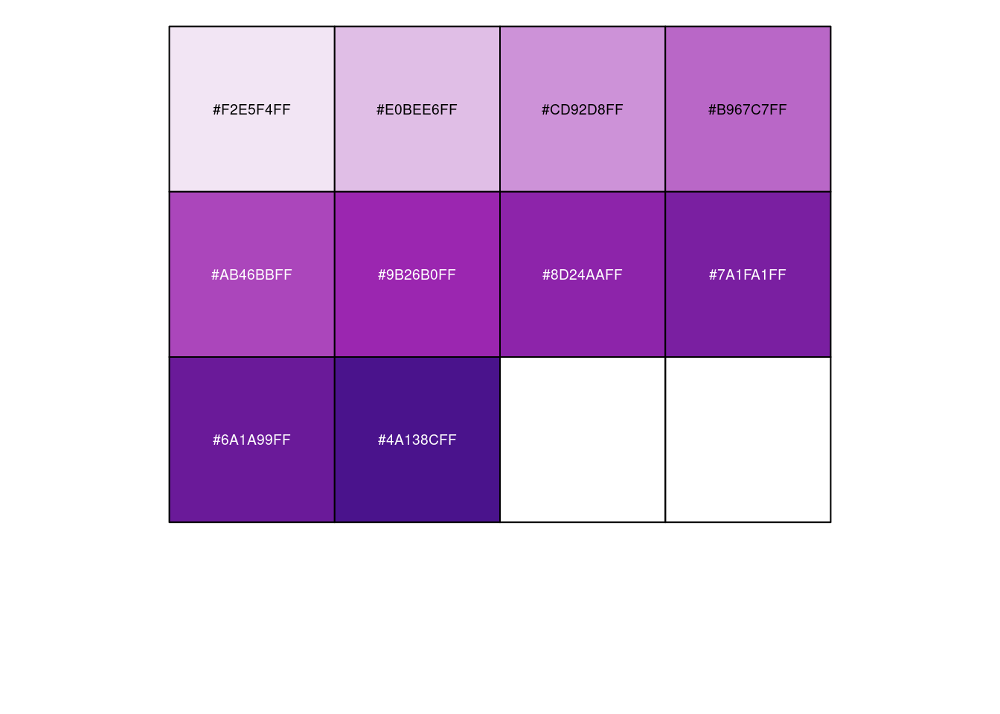

Chapter 3 colors
3.1 Multi Color System
colorbar=function(colorlist, main=""){
barplot(rep(1, length(colorlist)),
col=colorlist,
border=NA, space=0, axes=F, main=main)
}
par(mar=c(0,0,0,0))
tropical <- c("darkorange","dodgerblue","hotpink","limegreen","yellow")
colorbar(tropical)springtime <- c("#f6eb7b", "#e5769e", "#b3f281", "#73a8e3", "#c184ec")
colorbar(springtime)
amy <- c("#ee693f", "#b3de81", "#e8a735", "#3a5199", "#ffec5c")
colorbar(amy)cbPalette <- c("#999999", "#E69F00", "#56B4E9", "#009E73", "#F0E442", "#0072B2", "#D55E00", "#CC79A7")
colorbar(cbPalette)3.2 Single Color System
par(mar=c(0,0,0,0))
springgreen <- c("#7aa14c", "#86b251", "#a3d468", "#b7ea7b", "#cff99e")
colorbar(springgreen)
cleanwater <- c("#0669a5", "#0479c1", "#038de1", "#18a5fb", "#4cbbff")
colorbar(cleanwater)